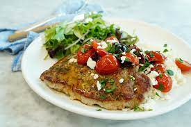

Seared Pork Chops

Description
Bursting with flavor and perfect for a light summer dinner, these Greek-inspired pork chops are anything but boring. The pork is well seasoned and the flavor is amplified through the caramelization that occurs during searing. The bright acidity is balanced out with salty, brininess from the olives and feta.
Ingredients
- Pork Chops
- Greek Seasoning
- Olive Oil
- Cherry Tomatoes
- Salt
- Pepper
- Olives
- Feta Cheese
- Parsley
Steps
- Place pork chops between sheets of plastic wrap or parchment paper and pound to flatten to 1/2-inch thickness. Season both sides of the chops evenly with Greek seasoning.
- Heat a large nonstick skillet over medium-high heat. Add 1 tablespoon oil. Place 2 chops in the hot skillet and sear for 2 minutes. Flip and cook until chops are no longer pink in the center, or to desired degree of doneness, 2 to 4 more minutes. Set aside and keep warm. Add 1 tablespoon oil to the skillet and repeat to cook remaining 2 chops.
- Add remaining 1 tablespoon oil to the skillet. Add tomatoes and sprinkle with salt and pepper. Cook, stirring occasionally, until tomatoes are slightly blistered and softened, about 3 minutes. Add olives and lemon juice and cook for 2 minutes.
- Serve tomato mixture over pork chops and sprinkle each serving with feta cheese and parsley.